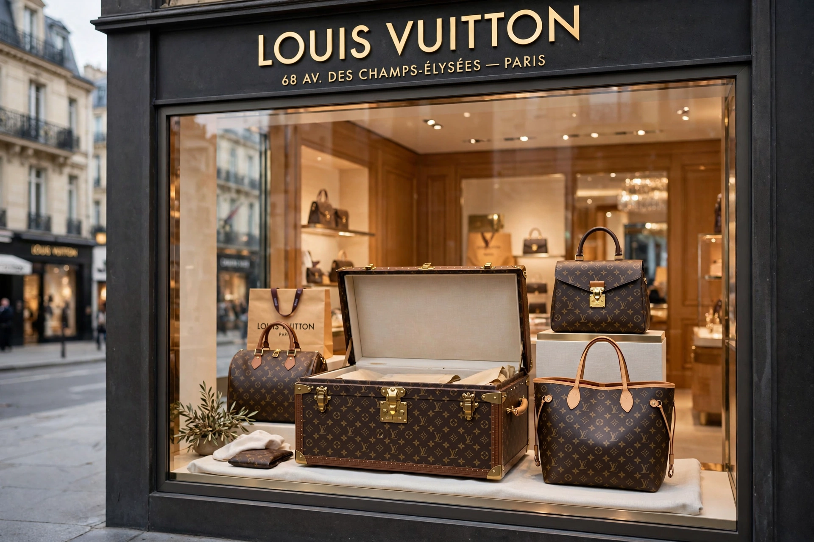

From Wikipedia, the free encyclopedia
| Louis Vuitton Malletier | |
|---|---|
 | |
| Founded | 1854, Paris, France |
| Founder | Louis Vuitton |
| Parent | LVMH Moët Hennessy Louis Vuitton |
| Products | Luxury trunks, leather goods, fashion, accessories |
Louis Vuitton Malletier, commonly known as Louis Vuitton or LV, is a French luxury fashion house and company founded in 1854 by Louis Vuitton. Its monogram canvas, created in 1896, is one of the world's most recognisable luxury marks, and the brand is regularly ranked the most valuable luxury brand in the world. It is the flagship label of LVMH, the conglomerate controlled by Bernard Arnault, whose cultural arm built the Fondation Louis Vuitton.
Louis Vuitton, who arrived in Paris as a teenager and apprenticed as a box-maker and packer, opened his own trunk-making shop in 1854 and introduced flat-topped, stackable trunks covered in Trianon canvas. His son Georges created the Monogram canvas in 1896 to combat counterfeiting. Iconic bags followed: the Keepall, Speedy, Noé and Alma. In 1987 the company merged with Moët Hennessy to form LVMH.
Marc Jacobs became artistic director in 1997 and launched ready-to-wear. Men's wear was led by Kim Jones and then Virgil Abloh (2018–2021), succeeded by Pharrell Williams in 2023; women's wear has been designed by Nicolas Ghesquière since 2013. The house, like rival Dior within the same group, never discounts and destroys unsold stock rather than mark it down, sells only through its own boutiques, and vigorously litigates counterfeits.